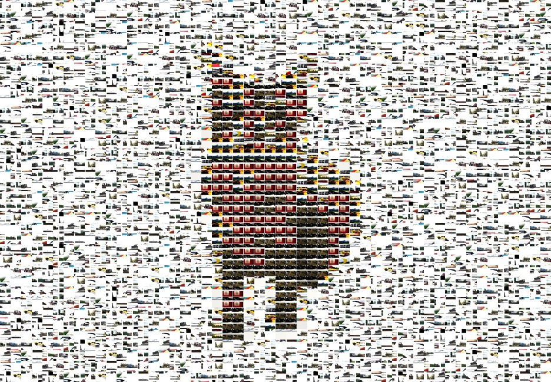
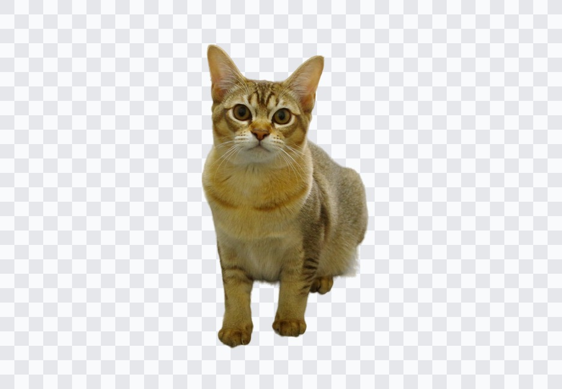
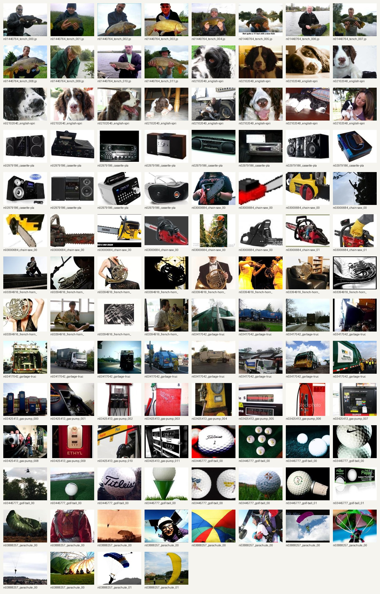

Item 1은 기존 baseline photo mosaic을 종료하고 main 방향으로 승격한 semantic object mosaic 프로젝트입니다. 이번 버전은 임의로 그린 고양이가 아니라 public transparent cat 이미지를 standard로 사용합니다. Target object는 segmentation/mask로 분리하고, NULL/background 영역도 흰색·배경 비중이 큰 실제 image tile로 채웁니다.


Wikimedia Commons의 실제 transparent cat 이미지를 standard image로 사용합니다. Production에서는 COCO/SAM-style segmentation으로 object/background cell을 나눕니다.

✓ object도 image tile
✓ NULL도 image tile
✓ blank color block 금지